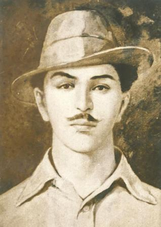
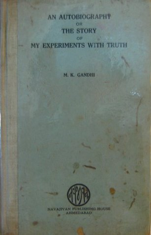

COSMOS

Rating: ★★★★☆ (4/5)
Cosmos has 13 heavily illustrated chapters, corresponding to the 13 episodes of the Cosmos television series. In the book, Sagan explores 15 billion years of cosmic evolution and the development of science and civilization. Cosmos traces the origins of knowledge and the scientific method, mixing science and philosophy, and speculates to the future of science.
By Cosmologist Carl SaganRich Dad Poor Dad

Rating: ★★★★☆ (4/5)
Rich Dad Poor Dad is Robert's story of growing up with two dads — his real father and the father of his best friend, his "rich dad" — and the ways in which both men shaped his thoughts about money and investing. The book explodes the myth that you need to earn a high income to be rich and explains the difference between working for money and having your money work for you.
By Robert T. KiyosakiWhy I am an atheist ?
Rating: ★★★★☆ (4/5)
Autobiography of an Indian revolutionary and freedom fighter.This young boy brought about a change in the way people thought about freedom.This book is a collection of eighteen of his valued writings from within the walls of prison and outside it, which show us the resolve in his words, and the bravery in his acts subsequently.
By Bhagat SinghMy Expermiments with Truth
Rating: ★★★★☆ (4/5)
It is not my purpose to attempt a real autobiography. I simply want to tell the story of my numerous experiments with truth, and as my life consists of nothing but those experiments, it is true that the story will take the shape of an autobiography.
By Mahatma GandhiWing of Fire

Rating: ★★★★☆ (4/5)
This is the story of Kalam's rise from obscurity and his personal and professional struggles, as well as the story of Agni, Prithvi, Akash, Trishul and Nag-missiles that have become household names in India and that have raised the nation to the level of a missile power of international reckoning. Journey from Newspaper Boy to Missile Man of India.
By A.P.J. Abdul KalamStory of My Life
Rating: ★★★★☆ (4/5)
When she was 19 months old, Helen Keller (1880–1968) suffered a severe illness that left her blind and deaf. Not long after, she also became mute. Her tenacious struggle to overcome these handicaps-with the help of her inspired teacher, Anne Sullivan who was with Helen till her last breath.
By Helen Keller